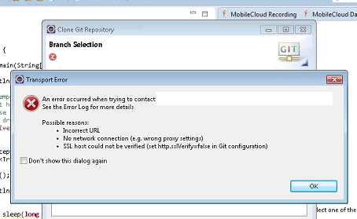
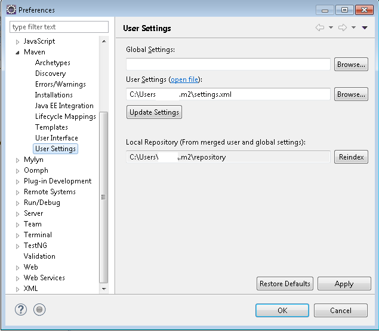
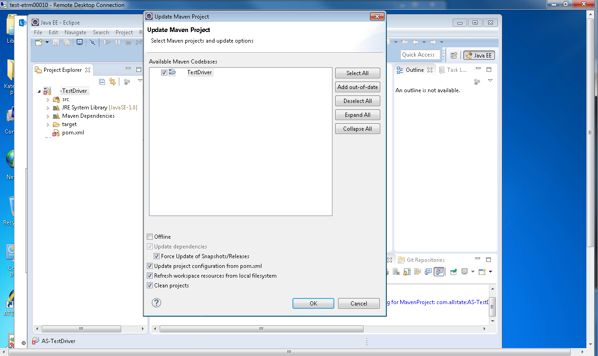

xFramium can be used with many different environments.
Eclipse
xFramium can be run from Eclipse allowing for execution and script development to occur in a single pane of glass
Prerequisites
Confirm if you have Java installed and what version. You need 1.7.x or later. You can check via the Windows command prompt by typing java -version
If you do not have it installed already install Java JDK 1.8 you can get it here
Install Eclipse Mars.2 if you do not already have it installed you may need to install Maven as well. Eclipse can be found here
Downloading the Source Code
The XML Framework is downloaded from the following Git Hub repository in to Eclipse
*Note* If you get an error message as below when attempting to clone the directory from Github you will need to set up Eclipse and Maven for proxies described later in this document
If you do NOT get this error or if you have now completed the steps for proxy set up continue here:
Open Eclipse, Window -> Show View -> Other… -> Git -> Git Repositories. Press a link called “Clone a Git repository
In the window “Clone Git Repository enter the following URL in to URL location: https://github.com/xframium/xframium.java
User: You can leave blank if you do not have a Github account
Password: You can leave blank if you do not have a Github account
Select only Master and Press Next on Branch Selection
Choose Local Destination location and press Finish.
Keep the default directory and click finish
in Git Repositories tab Right click on Xframium and scroll down to Import Projects...
Check import existing eclipse projects and click Next
Select only the Xframium driver to import
Press Finish to import the project
Now that the project has been imported you will run the file Testdriver.java as an application. This folder is found under the Xframium working set the folder path is src> org> xframium>driver. If successful, you will receive a usage message stating that you need to specify a configuration file.
Once this is completed you can move on to creating your folder structure
Proxy Configuration
If error below is shown, follow the following steps to fix it.

Go To Window -> Preferences -> Team -> Git-> Configuration.
Press “User Settings” tab. Press Add Entry… In the Key field type: http.sslVerify Value field: false
Press OK, Apply, OK.
Note: Location: field can be anything you want.
Once this is complete you should be able to complete the steps to clone the github repository.
Maven Proxy Configuration
In Eclipse, configure proxy and set it to “Native”. Proxy can be found at Window --> Preferences. General --> Network Connections
Change value in Active Provider drop down to Native.
Configure Maven to use a proxy. First, find your local Maven repository. Go to Window --> Preferences then Maven --> User Settings.

4. Create XML file call it settings.xml with content below. Store it in the .m2 folder (next to the repository folder). .M2 folder is located in C:\Users\yourWindowsID\.m2\
*Note* Proxy settings differ in each environment. Contact your network administrator for your appropriate settings
In the User Settings field press Browse and locate settings.xml which you just created. Press Apply and OK buttons. Close User Settings
Open up the Maven Console
In Project Explorer right click on Test-Driver, find Maven option -> click on Update Project
Select Check box for Force Update of Snapshots/Releases and click ok

At this point Maven jars should start downloading. After completing this set up you should be able to import the Driver in to Eclipse.
Driver and Folder Structures
Now that you have downloaded the framework and imported it in to your Eclipse you need to run Test Driver as a Java Application. Right click on the Test Driver project and select Run As a Java Application
Once that is completed you can Create some new folders for your testing. Open Eclipse and click File > New > Project. Search for General and select Project and then select Next
Create a name for your folder (typically XMLDriven) and select Finish
Now under that Project you just created create a folder for the Application you will be working with.
Once your folders have been created you can copy over the files needed from Test driver in the next section
My First Project
Now that you have downloaded and imported the Test Driver backend to the XML Framework you can move the appropriate files in to the folder structure you created.
Under Projects Test Driver look for the resources folder and the XML folder below
Copy the following file from the resources folder to the Main folder we created (XMLDriven) driverConfig.txt
Copy the following three files from the XML folder in to the Main folder we created (XMLDriven)
applicationRegistry.xml
cloudRegistry.xml
deviceRegistry.xml
Now copy the following three files from the XML folder to the application folder we created (TestApp)
pageData.xml
pageElements.xml
tests.xml
For a detailed description of the file types listed here, please refer to the Configuration documentation
Remote
The Remote Launcher offers a way to execute scripts without having to configure the driver. All of the code is pre-compiled and access via JNLP launcher window so it can be ran anywhere. If you don't want to both with the IDE configuration portion then give the xFramium Launcher a try